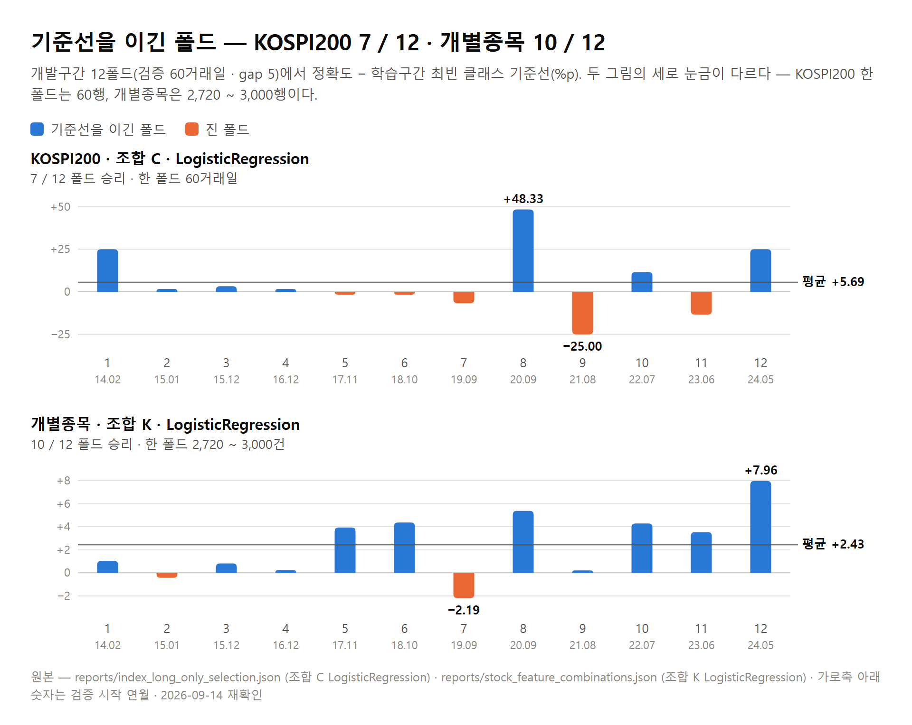
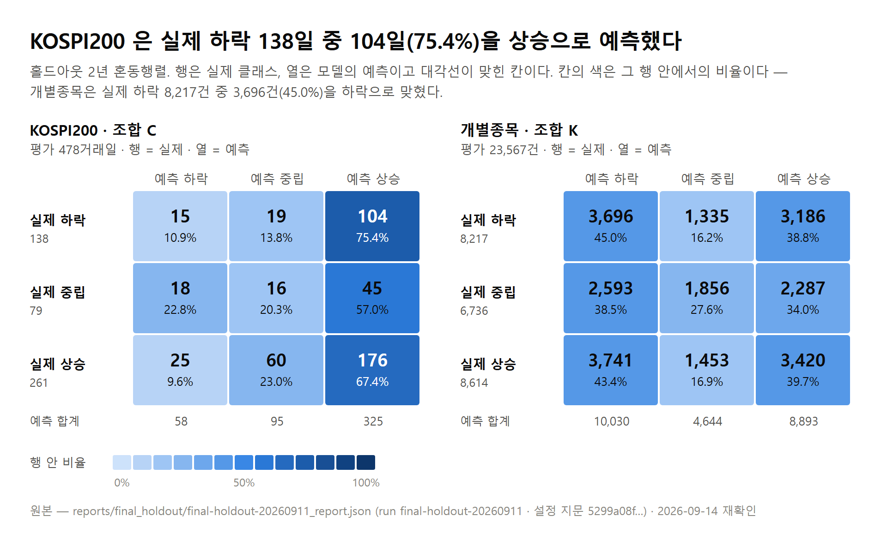
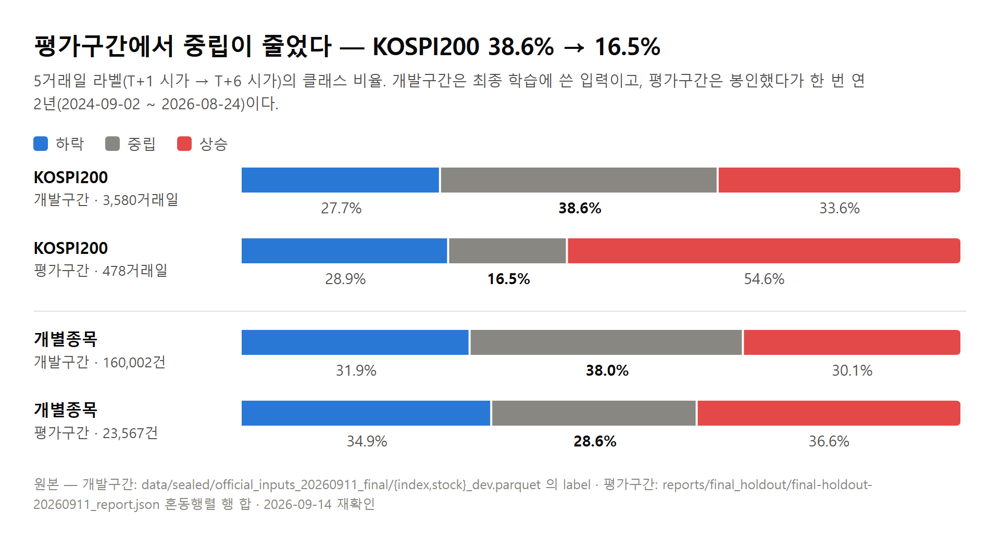

QURIOUS · 1차 프로젝트
결과 보고서
주가지수 데이터 활용 머신러닝 — KOSPI200 과 KOSPI 대형주의 5거래일 방향 예측과 그 검증
Qurious (큐리어스) — 맞히는 것보다 어려운 건, 맞혔다고 말해도 되는지 아는 것
요약서
강사님 계획서 양식(구분 · 내용 · 비고)을 그대로 두고, 계획 칸을 결과 칸으로 바꿨다. 본문 장 번호를 비고에 적었다.
| 구분 | 내용 | 비고 |
|---|---|---|
| 팀명 | Qurious (큐리어스) | Quant + Curious |
| 팀원(역할) | 이동원(팀장) – 데이터 수집·저장·정제, 시점정합 공급 계층, 홀드아웃 개봉 통제, 문서 오준영 – 피처 조합 비교, 모델 학습·선정, 최종 홀드아웃 실행 강민석 – 백테스팅·성과지표, 동적 기준선, Streamlit 대시보드 신장환 – 피처 엔지니어링·기술적 지표·파생 피처, 유동 임계값 | 발표 신장환·강민석 |
| 기간 | 2026.09.01 ~ 2026.09.15 (발표장소 : koreaIT노원 B강의실) | 6주 3개 중 1차 |
| 프로젝트 명 | Qurious (큐리어스) — 맞히는 것보다 어려운 건, 맞혔다고 말해도 되는지 아는 것 ※ 저장소 이름 Alpha_Stack 은 착수 시점의 이름이라 그대로 둔다 | |
| 연구 목적 | 기술적 지표(RSI · MACD · 이동평균 등)를 머신러닝으로 묶었을 때 KOSPI200 과 KOSPI 대형주의 5거래일 뒤 방향(상승 · 중립 · 하락)을 우연보다 잘 맞히는지 확인한다. 그리고 그 결론을 스스로 속이지 않고 내릴 수 있는 검증 절차를 함께 만든다. | 1장 |
| 데이터 | 2010-01-04 ~ 2026-09-04 일별시세 9,231,938행 등 자료 10종을 SQLite 한 파일(표 23개)에 모았다. 지금은 거래되지 않는 913종목을 지우지 않았고, 모든 자료는 “그날 알 수 있던 것” 만 꺼내는 공급 계층을 지난다. 2024-09-01 이후 2년은 봉인했다가 설정을 고정한 뒤 한 번 열었다. | 2장 |
| 분석 방법 | ① 라벨 — T+1 시가 → T+6 시가 수익률 3분류 (지수 ±1.0% · 종목 ±2.0%) ② 후보 — KOSPI200 100개 · 개별종목 44개(11조합 × 모델 4종) ③ 검증 — 날짜 단위 12폴드 · gap 5 · 학습구간 최빈 클래스 기준선 · 선정 순서 사전 고정 ④ 최종 — KOSPI200 조합 C · 개별종목 조합 K, 둘 다 로지스틱 회귀 | 3장 |
| 핵심 결과 | ① 개발구간 표본 밖 — 기준선 대비 KOSPI200 +5.69%p(12폴드 중 7승) · 개별종목 +2.43%p(10승). 다중검정 보정(Bonferroni)은 둘 다 통과하지 못했다. ② 홀드아웃 2년(478거래일) — 정확도 0.4331 · 0.3807, 학습 최빈 기준선 대비 +26.78%p · +9.49%p. 평가구간에 중립이 크게 줄어 이 차이는 부풀어 보이며, MCC 는 −0.0114 · 0.0585 다. ③ 홀드아웃 구간의 비용 차감 수익률 · Sharpe 는 아직 산출하지 않았다. | 4장 · 5장 |
| 결론 | 개별종목 트랙은 봉인 구간에서도 MCC 가 0 보다 컸고(0.06), KOSPI200 트랙은 0 에 가까웠다(−0.01). 개발구간 1위는 미리 정한 기준에 따른 선택이지 통계적으로 확정된 우위가 아니다. 이 결론을 편향 없이 내리게 한 절차 — 시점 정합 · 봉인 · 설정 사전 고정 · 시도 공개 — 가 2 · 3차가 그대로 쓰는 1차의 핵심 산출물이다. | 5장 · 9장 |
| 산출물 | ① Streamlit 대시보드 9페이지 — 기준선·모델·백테스트·비용 민감도·QFRS 를 한 화면에서. 공개 배포 두 곳(Streamlit Cloud · Hugging Face Space) ② 모델 성능 비교표 — 지수 100후보 · 종목 44후보, 기준선 대비와 다중검정 포함 ③ 최종 홀드아웃 결과 — 2년 478거래일을 한 번 평가한 지표와 매수 후보 (4.3절) ④ 재현 파이프라인 — 수집→검사→반출 한 명령, 최종 평가 한 명령 ⑤ 결과 보고서 · 발표자료 · README · 결정 기록(ADR) 10건 ⑥ 2·3차가 그대로 가져다 쓰는 성과 검증 엔진 · 저장소 github.com/devlee328288/Alpha_Stack | 부록 A |
1. 개요
1.1 배경
과제는 “주가지수 데이터를 활용한 머신러닝” 이다. 우리는 이것을 한 문장으로 좁혔다 — 개별 기술적 지표(RSI · MACD · 이동평균)를 따로 보는 대신 머신러닝으로 묶으면 가까운 미래의 방향을 실제로 더 잘 맞히는가.
주가 예측은 연구가 많고, 그 연구들이 공통으로 경고하는 것이 있다. 학술지에 발표된 수익률 이상현상 452개를 같은 방법으로 다시 재면 65% 가 통상의 유의 문턱(|t| ≥ 1.96)을 넘지 못하고, 다중검정을 고려한 문턱(|t| ≥ 2.78)을 쓰면 82% 가 넘지 못한다(Hou · Xue · Zhang, 2020). 머신러닝으로 미국 개별주의 월간 수익률을 예측한 대표 연구도 표본 밖 설명력(R²)이 0.40% 수준이다(Gu · Kelly · Xiu, 2020). 예측할 수 있는 몫은 원래 작고, 그 작은 몫은 검증이 조금만 느슨해도 만들어진다.
그래서 이 프로젝트는 예측 모델과, 그 예측이 스스로를 속이지 않았는지 검사하는 검증 절차를 같은 비중으로 만들었다. 이 과정은 6주 동안 3개 프로젝트로 이어지는 교육 과정의 1차이고, 세 프로젝트가 모두 “개발 및 성과 검증” 으로 끝나므로 1차에서 만든 데이터 계층과 검증 엔진을 2 · 3차가 그대로 쓰도록 설계했다.
1.2 문제 정의 — 이길 수 있는 폭이 좁다
문제의 크기를 우리 자료로 먼저 쟀다. 개발구간 KOSPI200 3,553거래일에서 아무 모델 없이 “늘 중립” 이라고만 답해도 38.50% 를 맞힌다. 우연이 아니라고 말하려면 41.11% 가 필요하다 — 단측 α = 0.05 에, 5거래일 라벨이 서로 겹쳐 관측이 독립이 아닌 것을 분산팽창계수(VIF) 3.78 로 반영한 값이다. 모델이 이길 수 있는 폭이 2.6%p 남짓이라는 뜻이다.
그 좁은 폭은 실수 한 줄로 사라진다. 라벨을 시가(t) → 시가(t+5) 로 하루 어긋나게 붙여 보니 피처와 라벨의 상관이 +0.0171 에서 +0.1709 로 정확히 10.0배 부풀었다. 에러는 나지 않는다. 좋아진 성능이 실력인지 누수인지를 가르는 장치가 없으면 어떤 결론도 믿을 수 없다.
지평도 같은 방식으로 정했다. 방향을 맞혀도 거래비용을 내고 남는 것이 있어야 한다. 손익분기 정확도를 0.5 + 왕복비용 / (2 × 평균 절대수익률) 로 계산하면, 개별주를 1일 지평 · 왕복 0.23% 로 거래할 때 62.72% 를 맞혀야 본전이다. 문헌상 정확도 상한이 55% 대이므로 설계 단계에서 이미 지는 실험이다. KOSPI200 ETF 를 5일 지평 · 왕복 0.05% 로 거래하면 51.24% 로 내려가 검정할 여지가 생긴다(ADR 0002 · 2026-08-26 KRX 원자료 4,097거래일 실측).
※ 5일 손익분기 51.24% 는 일간 절대수익률에 √5 를 곱한 근사다. ADR 0002 가 스스로 “실제 5일 절대수익 분포로 다시 재야 한다” 고 적어 두었다.
1.3 목표
착수 때 적은 목표 여덟 개는 아래와 같다. 무엇을 이뤘고 무엇을 남겼는지는 6장에서 하나씩 대조한다.
[표 1] 착수 때 적은 목표 (계획서 본표 · 목표 ④ ⑤ ⑥ 은 팀원 제안)
| 번호 | 착수 때 적은 목표 |
|---|---|
| ① | 룩어헤드 없는 성과 검증 엔진 — 워크포워드 gap 잠금·거래비용·기준선·사전등록, 봉인한 최근 2년으로 한 번만 최종 평가 |
| ② | 지수 트랙 — KOSPI200 의 5거래일 뒤 등락을 상승/보합/하락 3분류로 예측 |
| ③ | 종목 트랙 — 업종 시총 상위 10 × 업종별 종목 상위 5에서 확률 랭킹을 매긴다 |
| ④ | 5슬리브 중첩 운용 — 같은 모델을 매 거래일 돌려 진입 시점을 다섯으로 나눈다 |
| ⑤ | 유동 임계값 — 상승/보합/하락 경계를 변동성·거래량에 맞춰 조정한다 |
| ⑥ | 신호→포지션 규칙 — 공매도 없는 {0, +1}, 분할매매 비중을 정한다 |
| ⑦ | 모델 4종 동일 조건 비교 — LogisticRegression·RandomForest·XGBoost·LightGBM |
| ⑧ | 단일 명령 재현 + Streamlit 시연 화면 |
1.4 범위
- · 예측 대상 — KOSPI200 지수와, 매 거래일 업종 시가총액 상위 10개 × 업종별 KOSPI 보통주 시가총액 상위 5개(하루 최대 50종목)
- · 포지션 — {0, +1}. 공매도 없이 상승 예측만 매수하고 중립 · 하락 예측은 현금
- · 구간 — 개발 2010-01-04 ~ 2024-08-31 · 봉인(홀드아웃) 2024-09-01 ~ 2026-09-01
- · 범위 밖 — KOSDAQ 종목, 공매도를 쓰는 {−1, 0, +1}, 재무 · 거시 · 공시를 피처로 쓰는 모델, 딥러닝(LSTM · GRU) 비교. 넷 모두 붙일 자리는 만들어 두었다(9장)
1.5 이 보고서를 읽는 법
- · 결과(4장)와 해석(5장)을 나눴다. 4장에는 숫자와 표만 두고, 그 숫자가 무엇을 뜻하는지는 5장에 적는다.
- · 모든 숫자는 원본 파일(결과 JSON · 데이터베이스 · 로그)에서 2026-09-14 에 다시 읽었다. 원본 경로는 표 캡션이나 부록 B 에 있다.
- · “기준선” 은 따로 말하지 않으면 학습에 쓴 구간에서 가장 많았던 클래스를 평가 전체에 예측한 정확도다(ADR 0006). 평가구간의 정답을 보고 센 값은 “사후값” 이라고 따로 부른다.
- · 모델 · 백테스트 · 피처처럼 담당 파트가 따로 있는 내용은 각 파트가 저장소에 남긴 결정 기록과 결과 파일을 옮겨 적었다. 결정의 이유는 결정한 사람이 남긴 문장만 인용한다.
- · 문서 번호(ADR 0006 등)는 부록 B 에 경로와 “무엇을 답하는 문서인가” 를 함께 적었다.
2. 데이터
2.1 무엇을 모았나
자료는 모두 SQLite 데이터베이스 한 파일(6,685 MB · 표 23개 · 스키마 v16)에 쌓았다. 원천은 KRX Open API · 전자공시(DART) · 공공데이터포털 · 한국은행 ECOS 넷이고, 수정주가는 FinanceDataReader 로 보강했다. 아래 행 수는 2026-09-14 15:00 KST 에 데이터베이스를 읽기 전용으로 열어 다시 셌다(scripts/check_db.py).
[표 2] 수집한 자료 10종
| 자료 | 규모 | 기간 | 출처 |
|---|---|---|---|
| 일별시세 (수정주가 · 총수익) | 9,231,938행 | 2010-01-04 ~ 2026-09-04 | KRX Open API · FinanceDataReader |
| 종목기본정보 (그날 기준) | 9,229,173행 | 2010-01-04 ~ 2026-09-03 | KRX Open API |
| 종목 식별 (법인등록번호 · ISIN) | 4,197,242행 | 2020-01-02 ~ 2026-08-31 | 공공데이터포털 |
| 공시 목록 | 1,555,556행 | 2010-01-04 ~ 2026-09-04 | DART |
| 재무제표 | 662,933행 | 접수 2015-09-23 ~ 2026-08-14 | DART |
| 지수 | 196,272행 | 2010-01-04 ~ 2026-09-04 | KRX Open API |
| 배당 | 71,681행 | ~ 2026-09-03 | 공공데이터포털 |
| 기업행위 사건 | 44,290행 | ~ 2026-09-04 | 시세·종목기본정보에서 판정 |
| 업종 스냅샷 (사람이 받은 36장) | 40,874행 | 2024-01 ~ 2026-09 | KRX 화면 — 약관상 자동 수집 금지 |
| 거시지표 | 17,864행 | 2009-08 ~ | 한국은행 ECOS |
원자료는 코드 저장소에 두지 않는다. 팀원에게는 개발구간(~2024-08-31)만 잘라 Hugging Face 비공개 데이터셋(qurious-quant/alphastack-krx-dev)으로 나누고, 만드는 방법(스크립트)만 저장소에 남겼다. 업종 분류는 KRX 약관이 자동 수집을 금지해 사람이 화면에서 받은 스냅샷 36장을 반입 엔진으로 넣었다.
![[그림 1] 시스템 구성 — 수집 → 저장 → 공급(as_of) → 피처 → 모델 → 검증 · 백테스트 → 화면 (docs/아키텍처/version1.3)](../../아키텍처/version1.3/시스템아키텍처.png)
자료는 반드시 시점 정합 공급 계층을 지나야 모델에 들어간다. 이 문을 지나지 않는 조회는 시험(테스트)이 막는다. 홀드아웃을 여는 문은 따로 하나이고, 열 때마다 기록이 한 줄 남는다(2.5절).
2.2 그날 알 수 있던 것만 — 시점 정합
주가 예측에서 가장 흔하고 가장 조용한 오류는 미래 정보가 과거 행에 섞이는 것이다. 자료마다 “그 행에서 보이기 시작하는 날” 을 정하고, 자료를 꺼내는 함수가 기준 시점(as_of)을 반드시 받도록 기본값을 두지 않았다. 빠뜨리면 조용히 틀리는 대신 멈춘다.
[표 3] 자료별로 보이기 시작하는 날
| 자료 | 그 행에서 보이기 시작하는 날 |
|---|---|
| 시세 | T일 종가로 판단하고 T+1 시가에 체결한다 — 라벨도 T+1 시가 → T+6 시가 |
| 재무 | DART 접수일 다음 거래일 · 정정본은 정정 접수일 |
| 공시 제목 | 접수일 다음 거래일 |
| 거시 | 발표 규칙으로 보수적으로 계산한 날 (ECOS 가 발표일을 주지 않는다) |
| 업종 · 주권종류 | 스냅샷 다음 거래일 · 그날까지 받은 것 중 가장 최근 하나 |
이 장치가 실제로 막는지는 일부러 틀리게 붙인 대조군으로 확인했다. 팀 유니버스(월말 116일 × 후보 5,703행)에서 재무 자료를 결산기 끝 날짜로 붙이면 23.2%, 원본 최초 접수일로 붙이면 9.1% 의 행이 그날 알 수 없던 보고서를 봤고, 공급 계층을 지난 경우는 0행이었다. “0행” 은 틀린 방법이 같은 자리에서 실제로 샌다는 것을 보인 뒤에야 뜻을 갖는다.
2.3 생존편향과 학습 표본
수집 마지막 날(2026-09-04) 기준 3,678종목 중 913종목(24.8%)이 그 전에 거래가 끊겼고, 이 종목들을 지우지 않았다(개발구간 안에서 끊긴 종목 750). 지금 살아 있는 종목만으로 과거를 평가하면 망한 회사가 빠져 성과가 부풀기 때문이다.
대신 실제로 체결될 수 없는 행은 학습 표본에서 뺐다 — 가격제한폭이 없는 정리매매 구간, 체결이 없는 거래정지 행, 신규상장 첫날. 폐지 종목을 그대로 넣었더니 체결될 수 없는 급락 봉이 반대 방향의 편향을 만들었기 때문이다.
개별종목 후보는 매 거래일 그날의 시가총액으로 업종 상위 10개를 고르고, 업종마다 KOSPI 보통주 시가총액 상위 5개를 고른다. 업종 정보는 그날까지 받은 스냅샷 중 가장 최근 것만 쓴다. 이 규칙으로 개발구간 후보 176,705행이 나왔고, 위 제외 규칙으로 462행을 빼 176,243행이 남았다. 열한 피처 조합이 모두 값을 갖는 공통 비교 표본은 3,343거래일 · 159,900행이다(reports/stock_feature_combinations.json).
2.4 이상치와 품질 게이트
이상치는 크기로 자르지 않았다. 30% 넘게 움직인 날 중에는 권리락 · 거래정지 해제 · 정리매매처럼 실제로 일어난 사건이 섞여 있고, 그것을 지우면 모델이 먹어야 할 정보를 지운다. 그래서 “거래소가 발표한 등락률과 수정주가로 계산한 수익률이 1%p 넘게 어긋나는가” 로 원본 오류를 가르고, 실제 극단 사건은 별도 칸으로 표시했다. 개발구간 3,315,889행 중 어긋난 행은 1,080행, 30% 넘는 극단 행은 853행이었고, 모델 후보 176,243행에는 어긋난 행 0 · 극단 행 4 가 남았다.
종목코드가 재사용된 자리에서 앞 회사의 기록이 뒤 회사에 붙던 행(개발구간 74 · 홀드아웃 187)은 상장 구간을 판정해 0행으로 만들었다.
품질 검사는 두 종류로 나눴다. 막는 검사(봉인 구간 누수 · 검증기 4종 · 비공개 재확인)는 하나라도 실패하면 팀 공유 데이터셋 반출이 멈춘다. 기록하는 검사(결측 · 유효성 · 이상치 · 거래량 · 달력 · 중복 · 봉인 · 총수익 여덟 축)는 결과를 데이터 카드에 그대로 적는다. 둘을 나눠 두어야 적어야 할 경고 때문에 반출이 멈추거나, 막아야 할 오류가 경고로 지나가는 일이 없다.
2.5 봉인 — 홀드아웃을 한 번만 여는 문
2024-09-01 이후 약 2년은 모델을 고르는 동안 누구도 보지 못하게 봉인했다(ADR 0005). 처음 봉인 시작은 2021-09-01 이었는데, 재무 자료를 공시 접수일 기준으로 정렬하면 개발구간에 45.4% 만 남아 2년으로 줄였다(줄인 뒤 개발구간 재무 75.1%).
봉인을 여는 명령은 하나이고, 열 때마다 reports/unseal.log 에 한 줄이 남는다. 형식은 사전등록(ADR 0004)이 정했다 — 개봉 시각 · 코드 커밋 · 자료 지문 · 사전등록 커밋 · 요청자 · 사유. 기록이 두 줄이 되면 보고서 표지에 “확증 불가” 를 인쇄한다. 2026-09-14 현재 기록은 한 줄이다.
# reports/unseal.log — 한 줄 = 한 번의 개봉 2026-09-11T16:18:48+09:00 | 9c87be99… | ecb3c806… | 0d5bd5bf… | 이동원 | 최종 모델 1회 평가 — 팀 합의 2026-09-11 · 끝은 수정주가가 채워진 20260901
봉인 끝을 수집 마지막 날(2026-09-04)이 아니라 2026-09-01 로 둔 것은 그 뒤 사흘의 수정주가가 아직 계산되지 않았기 때문이다. 사흘을 채우려고 수정주가를 다시 만들면 개발구간의 옛 행이 흔들린다(10장 ⑧).
2.6 개발구간 라벨 분포
[표 4] 개발구간 라벨 분포 — 최종 학습 입력 data/sealed/official_inputs_20260911_final/*_dev.parquet
| 트랙 | 표본 | 하락 | 중립 | 상승 |
|---|---|---|---|---|
| KOSPI200 | 3,580거래일 | 993 (27.7%) | 1,383 (38.6%) | 1,204 (33.6%) |
| 개별종목 | 160,002건 | 50,971 (31.9%) | 60,837 (38.0%) | 48,194 (30.1%) |
두 트랙 모두 중립이 가장 많다. 그래서 학습구간 최빈 클래스 기준선은 두 트랙 모두 “늘 중립” 이라고 답하는 예측이 된다. 이 분포가 평가구간에서 어떻게 달라졌는지는 5.2절에서 본다.
3. 방법
3.1 라벨 — 실제로 체결할 수 있는 시점에 맞췄다
종가를 보고 나면 장이 끝나 있으므로 “종가에 사서 다음 종가에 판다” 는 개인이 실행할 수 없다. 그래서 T일 종가까지의 정보로 판단하고, T+1일 시가에 사서, T+6일 시가에 평가한다. 라벨도 같은 시점으로 정의해 신호 · 체결 · 라벨 세 시점을 일치시켰다(ADR 0002).
[표 5] 라벨 정의
| 항목 | KOSPI200 | 개별종목 |
|---|---|---|
| 예측 지평 | 5거래일 | 5거래일 |
| 진입 · 평가 | T+1 시가 → T+6 시가 | T+1 수정시가 → T+6 수정시가 |
| 중립대 | ±1.0% | ±2.0% — 변동성이 지수의 약 2.1배 |
| 포지션 | {0, +1} — 공매도 없음 | {0, +1} |
| 결정 기록 | ADR 0002 | ADR 0006 |
중립대가 두 트랙에서 다른 이유는 변동성이다. 같은 T+1 → T+6 기준으로 잰 개별종목 후보의 수익률 표준편차와 평균절대수익률이 KOSPI200 의 약 2.1배여서, 지수 중립대 ±1.0% 를 변동성에 비례시키면 ±2.1 ~ 2.2% 가 된다(ADR 0006). 세 클래스가 더 고르게 나오는 ±1.75% 는 택하지 않았다. ADR 0006 은 그 이유를 이렇게 적었다.
“클래스 균형과 낮은 정확도 기준선을 목적으로 라벨을 바꾸면 모델 성능을 확인한 뒤 목표를 조정하는 문제가 생길 수 있다.”
— ADR 0006 맥락 (2026-09-07)
포지션은 {0, +1} 이다. 재개 뒤 6개월 개인 공매도 비중이 1.2% 에 그쳐(ADR 0002) 하락 예측은 “보유하지 않음(현금)” 으로만 실행한다. 이 선택은 모델을 고르는 기준에도 이어진다 — 하락과 중립은 같은 주문이므로 하락을 잘 맞히는 능력에 가점을 주지 않았다(3.6절).
3.2 피처
피처는 가격 · 거래량에서 계산하는 기술적 지표다. 이동평균 · RSI · MACD · 볼린저밴드 · ATR · 역사적 변동성 · 거래량 비율 · OBV 를 numpy 로 직접 구현하고 지표마다 손계산 시험을 붙였다. 종목과 시기마다 눈금이 다른 값은 비율로 바꾼 파생 피처(이동평균 간격 · MACD 히스토그램 비율 등)로 맞췄다.
이 피처로 조합을 만들어 같은 표본에서 비교했다. KOSPI200 은 조합 A ~ F 와 수익률 피처 변형을 모델 4종과 엮은 후보 100개, 개별종목은 조합 A ~ K 11개(피처 4 ~ 14개) × 모델 4종인 후보 44개다. 개별종목 11조합에서 피처 수와 성적 사이에는 관계가 없었다(스피어만 ρ = −0.05, p = 0.88) — 개수가 아니라 어떤 축을 담았는지가 갈랐다.
[표 6] 최종 조합의 피처
| 트랙 · 조합 | 피처 | 무엇을 재나 |
|---|---|---|
| KOSPI200 조합 C · 6개 | sma_gap_5_20 · macd_hist_ratio | 추세의 방향과 강도 |
| rsi_14 · bb_position | 과매수·과매도 · 볼린저밴드 안 위치 | |
| hv_20 · vol_ratio_20 | 20일 변동성 · 평소 대비 거래량 | |
| 개별종목 조합 K · 14개 | atr_ratio · bb_bandwidth · hv_regime · hv_20 | 변동성의 크기와 국면 |
| five_day_return · daily_return · relative_ret_5_market | 최근 수익률 · 시장 대비 성과 | |
| sma_gap_5_20 · sma_gap_20_60 · macd_hist_ratio | 단기·중기 추세 | |
| rsi_14 · bb_position | 과매수·과매도 · 위치 | |
| vol_ratio_20 · obv_slope_20 | 거래량 |
3.3 전처리 — 원값을 쓴다
스케일링을 전 구간에 먼저 적용하면 누수다. 모델 안의 StandardScaler 는 폴드의 학습 행으로만 맞추고(sklearn Pipeline), 그 밖의 전처리는 통제 실험으로 정했다. 극단값 자르기 · 횡단면과 시계열 z-score · 순위 변환 · 시가총액과 업종 중립화까지 후보 여덟을 같은 조건(조합 K · 로지스틱 회귀 · 12폴드)에서 비교했더니 원값을 확실히 넘는 후보가 없었다(최선 +0.15%p · p = 0.535, 최악 업종 중립화 −3.47%p).
퀀트 표준으로 널리 쓰는 날짜별 winsorize + z-score 를 걸었을 때 기준선 대비 정확도가 1.58%p 떨어진 이유도 확인했다. 우리 라벨은 절대 ±2% 밴드라 변동성 수준 자체가 라벨의 절반을 설명하는데(20일 변동성 십분위와 비중립 비율의 스피어만 상관 1.0000), 날짜별 표준화가 그 수준을 지운다. 표준이 틀린 것이 아니라, 그 표준이 전제하는 “같은 날 종목끼리의 상대 순위” 라는 목표와 우리 라벨이 다르다.
손실의 구조도 갈랐다. 중립화는 회귀에 늘 절편이 들어가므로 어느 축을 지우든 그날 평균부터 지운다. 업종 라벨을 무작위로 섞어 자유도만 같게 만든 대조군과 비교하면, 업종 중립화의 손실 3.47%p 는 날짜 수준 48% · 자유도 33% · 업종 정보 19% 로 나뉜다(docs/전처리/version1.4).
3.4 검증 설계
모델 비교는 날짜 단위 확장창(expanding) 워크포워드로 했다. 처음 750거래일로 학습하고 이어지는 60거래일을 검증하며, 학습과 검증 사이에 5거래일(gap)을 비운다. 이 창을 12번 밀어 2014-02-17 ~ 2024-08-22 의 720거래일을 표본 밖에서 평가했다. 같은 날의 여러 종목이 학습과 검증으로 쪼개지지 않도록 날짜를 한 덩어리로 나눈다. gap 이 라벨 지평보다 짧으면 검증 엔진이 예외를 던진다.
[표 7] 모델 선정 · 검증 설계
| 항목 | 값 |
|---|---|
| 후보 모델 | LogisticRegression · RandomForest · XGBoost · LightGBM |
| 후보 수 | KOSPI200 100개 · 개별종목 44개 (11조합 × 4모델) |
| 분할 | 날짜 단위 expanding 12폴드 · 최초 학습 750거래일 · 검증 60거래일 · gap 5 KOSPI200 표본 밖 검증 2014-02-17 ~ 2024-08-22 · 720거래일 |
| 기준선 | 폴드마다 학습구간 최빈 클래스를 검증구간 전체에 예측한 정확도 검증구간 최빈 비율은 정답을 본 값이라 선정에 쓰지 않는다 |
| KOSPI200 선정 | 관문 — 기준선 대비 정확도 > 0 이고 기준선을 이긴 폴드 7/12 이상 → 상승 PR-AUC → 비용 차감 ΔSharpe(폴드 중앙값) → 상승 Precision |
| 개별종목 선정 | 기준선 대비 정확도 → Macro F1 → 기준선을 이긴 폴드 수 (ADR 0007) |
| 전처리 | 후보 8개를 12폴드 통제 실험으로 비교 → 원값 유지 모델 안 StandardScaler 는 폴드의 학습 행으로만 맞춘다 |
| 개봉 전 고정 | class weight 두 트랙 모두 balanced · KOSPI200 상승 임계 0.3375 두 트랙이 모두 상승일 때만 매수 후보 · 설정 지문 5299a08f (ADR 0009) |
| 홀드아웃 | 2024-09-01 이후 약 2년 봉인 (ADR 0005) 결과를 본 뒤 모델·피처·임계값을 다시 고르지 않는다 (ADR 0007) |
class weight(없음 / balanced)와 KOSPI200 상승 임계값(후보 25개)은 각 폴드의 학습구간 안에서 다시 나눈 내부 검증으로만 골랐다. 개별종목은 조합마다 내부 시도 96회 · 외부 학습 48회로 전체 1,584회 학습했다. 검증구간 정답을 보고 고른 값은 없다.
3.5 무엇을 이겨야 하나 — 기준선
각 폴드의 기준선은 그 폴드의 학습구간에서 가장 많았던 클래스를 검증구간 전체에 예측한 정확도다. 예측 시점에 실제로 만들 수 있는 예측이라 모델이 넘어야 할 바닥으로 쓴다. 학습 클래스가 정확히 동률이면 검증 정답을 보지 않고 중립 → 하락 → 상승 순서로 고른다(ADR 0006).
검증구간에서 가장 많았던 클래스의 비율은 쓰지 않는다. 두 결정 기록이 같은 말을 한다.
“이 값은 검증 정답 분포를 미리 본 사후 통계이므로 실제 예측 시점에 사용할 수 있는 비교 기준선과 구분해야 한다.”
— ADR 0006 맥락 (2026-09-07)
“검증구간 최빈 클래스 비율은 정답을 본 oracle 통계이므로 선택 기준으로 사용하지 않는다.”
— ADR 0007 결정 (2026-09-08)
3.6 선정 규칙 — 결과를 보기 전에 순서를 적었다
KOSPI200 은 두 단계로 골랐다. 먼저 관문 — 기준선 대비 정확도가 0 보다 크고 12폴드 중 7폴드 이상에서 기준선을 이겨야 한다. 관문을 통과한 후보를 상승 PR-AUC → 비용 차감 ΔSharpe(폴드 중앙값) → 상승 Precision 순으로 줄 세웠다(이슈 #216). 선정 리포트는 관문의 성격을 이렇게 적었다.
“7/12는 통계적 유의성 문턱이 아니라 저성능 후보를 거르는 최소 운영 안정성 관문”
— reports/index_long_only_selection.json · selection_policy
개별종목은 ADR 0007 순서로 골랐다 — ① 기준선 대비 정확도 평균 → ② Macro F1 → ③ 기준선을 이긴 폴드 수 → ④ 모두 같으면 조합명 · 모델명 순. 하락 재현율과 기존 3지표 조화평균은 진단값으로 보고만 한다. ADR 0007 은 그 이유를 이렇게 적었다.
“현재 매매 정책은 상승 예측만 매수하고 중립·하락 예측에는 현금을 보유하는 {0, +1} 정책이다. 하락 Recall이 높은 모델을 최종 선택하면 실제 포지션을 만들지 않는 예측에 가점을 주게 된다.”
— ADR 0007 맥락 (2026-09-08)
3.7 홀드아웃 절차
선정이 끝난 뒤 개발구간 전체로 한 번 학습해 봉인 구간을 평가하려면, 폴드마다 달랐던 class weight 와 임계값을 하나로 정하는 규칙이 필요하다. 이 값을 결과를 본 뒤 정하면 봉인 구간이 개발구간이 되므로, 개봉 전에 설정 파일 하나로 고정하고 그 지문을 결과에 남겼다(ADR 0009).
[표 8] 개봉 전에 고정한 단일 설정 — ADR 0009 · config/final_holdout_model.json · 지문 5299a08f…
| 항목 | 확정값 | 개발구간 근거 |
|---|---|---|
| KOSPI200 모델 | 조합 C · LogisticRegression | long-only 100후보 1위 |
| KOSPI200 class weight | balanced | 12개 외부 폴드 중 8개에서 선택 |
| KOSPI200 상승 임계값 | 0.3375 | 12개 외부 폴드 선택값의 중앙값 |
| 개별종목 모델 | 조합 K · LogisticRegression | ADR 0007 순위 1위 |
| 개별종목 class weight | balanced | 12개 외부 폴드 전부에서 선택 |
실행은 네 단계였다. ① 개발구간 마지막 창(2024-05-29 ~ 2024-08-31)으로 드라이런 → ② 데이터 담당이 입력 파일 넷의 SHA-256 과 설정 지문을 적은 개봉 승인 파일 작성 → ③ 2026-09-11 16:18 봉인 해제(기록 1줄) → ④ 공식 실행 1회(run_id final-holdout-20260911). 결과 폴더가 이미 있으면 덮어쓰지 않는다.
개봉 뒤 모델 파트는 최종 목적을 다시 확인해, 개봉 자료의 대부분까지 포함해 학습하고 자료 끝의 마지막 5거래일 보유 구간 하나를 예측하는 실행을 더했다(ADR 0010). 설정은 ADR 0009 그대로다. ADR 0010 은 이 결과를 어떻게 불러야 하는지도 적었다.
“이 결과를 ADR 0004·0009에서 사전등록한 “2년 전체의 확증적 홀드아웃 평가”라고 부르지 않는다. 개봉 후 목적을 바로잡은 마지막 한 구간 최종 운영 평가로 보고한다.”
— ADR 0010 맥락 (2026-09-11 · 오준영)
한편 착수 때 사전등록(ADR 0004)한 주 검정은 분류 정확도가 아니라 거래비용을 반영한 일간 초과수익(전략 − Buy&Hold)의 평균이 0 보다 큰가였다(stationary block bootstrap · 기대 블록 10거래일 · 10,000회 · 단측 α = 0.05). 이 검정에는 홀드아웃 구간의 비용 차감 백테스트 결과가 필요하고, 그 결과는 이 보고서를 쓰는 시점까지 산출되지 않았다(6장 · 9장).
4. 결과
이 장에는 숫자만 둔다. 무엇을 뜻하는지는 5장에서 읽는다. 표본은 셋이다 — ① 모델을 고른 개발구간 표본 밖(12폴드 · 720거래일), ② 봉인했다가 한 번 연 홀드아웃 2년(478거래일), ③ 개봉 뒤 목적을 바로잡은 마지막 한 구간(판단일 하루). 셋은 기간과 학습 자료가 달라 서로 직접 비교하지 않는다.
4.1 개발구간 표본 밖 — 모델을 고른 근거
[표 9] 개발구간 표본 밖 결과 — reports/index_long_only_selection.json · reports/stock_feature_combinations.json (2026-09-09 실행)
| 지표 | KOSPI200 · 조합 C | 개별종목 · 조합 K |
|---|---|---|
| 표본 밖 검증 | 2014-02-17 ~ 2024-08-22 · 720거래일 | 같은 12폴드 · 34,542건 |
| 정확도 (폴드 평균) | 0.4542 | 0.4211 |
| 학습 최빈 기준선 (폴드 평균) | 0.3972 | 0.3969 |
| 기준선 대비 | +5.69%p | +2.43%p |
| 기준선을 이긴 폴드 | 7 / 12 | 10 / 12 |
| Macro F1 | 0.4167 | 0.3781 |
| Balanced accuracy | 0.4240 | 0.3920 |
| MCC | 0.1528 | 0.0994 |
| 하락 재현율 | 0.1910 | 0.3058 |
| 상승 PR-AUC | 0.3965 | 0.3545 |
| 상승 Precision | 0.4221 | — (리포트에 없음) |
| 매수 신호 | 308 / 720일 | — |
| 비용 차감 ΔSharpe (폴드 중앙값) | 0.2332 | — (리포트에 없음) |

[표 10] KOSPI200 · 조합 C 폴드별 결과 (한 폴드 60거래일)
| 폴드 | 검증 기간 | 정확도 | 학습 최빈 기준선 | 기준선 대비 | 결과 |
|---|---|---|---|---|---|
| 1 | 2014-02-17 ~ 2014-05-14 | 0.5167 | 0.2667 | +25.00%p | 이김 |
| 2 | 2015-01-23 ~ 2015-04-21 | 0.5500 | 0.5333 | +1.67%p | 이김 |
| 3 | 2015-12-28 ~ 2016-03-28 | 0.4667 | 0.4333 | +3.33%p | 이김 |
| 4 | 2016-12-02 ~ 2017-02-28 | 0.6833 | 0.6667 | +1.67%p | 이김 |
| 5 | 2017-11-13 ~ 2018-02-07 | 0.4667 | 0.4833 | −1.67%p | 짐 |
| 6 | 2018-10-24 ~ 2019-01-18 | 0.3167 | 0.3333 | −1.67%p | 짐 |
| 7 | 2019-09-30 ~ 2019-12-24 | 0.3667 | 0.4333 | −6.67%p | 짐 |
| 8 | 2020-09-02 ~ 2020-11-30 | 0.6167 | 0.1333 | +48.33%p | 이김 |
| 9 | 2021-08-06 ~ 2021-11-05 | 0.1833 | 0.4333 | −25.00%p | 짐 |
| 10 | 2022-07-14 ~ 2022-10-12 | 0.4500 | 0.3333 | +11.67%p | 이김 |
| 11 | 2023-06-20 ~ 2023-09-12 | 0.3500 | 0.4833 | −13.33%p | 짐 |
| 12 | 2024-05-29 ~ 2024-08-22 | 0.4833 | 0.2333 | +25.00%p | 이김 |
[표 11] 개별종목 · 조합 K 폴드별 결과 (한 폴드 2,720 ~ 3,000건)
| 폴드 | 검증 기간 | 정확도 | 학습 최빈 기준선 | 기준선 대비 | 결과 |
|---|---|---|---|---|---|
| 1 | 2014-02-17 ~ 2014-05-14 | 0.5117 | 0.5012 | +1.04%p | 이김 |
| 2 | 2015-01-23 ~ 2015-04-21 | 0.3935 | 0.3978 | −0.43%p | 짐 |
| 3 | 2015-12-28 ~ 2016-03-28 | 0.3844 | 0.3762 | +0.82%p | 이김 |
| 4 | 2016-12-02 ~ 2017-02-28 | 0.4642 | 0.4617 | +0.25%p | 이김 |
| 5 | 2017-11-13 ~ 2018-02-07 | 0.4294 | 0.3901 | +3.93%p | 이김 |
| 6 | 2018-10-24 ~ 2019-01-18 | 0.4161 | 0.3725 | +4.36%p | 이김 |
| 7 | 2019-09-30 ~ 2019-12-24 | 0.4563 | 0.4781 | −2.19%p | 짐 |
| 8 | 2020-09-02 ~ 2020-11-30 | 0.4014 | 0.3476 | +5.37%p | 이김 |
| 9 | 2021-08-06 ~ 2021-11-05 | 0.3935 | 0.3914 | +0.21%p | 이김 |
| 10 | 2022-07-14 ~ 2022-10-12 | 0.3882 | 0.3454 | +4.28%p | 이김 |
| 11 | 2023-06-20 ~ 2023-09-12 | 0.4077 | 0.3723 | +3.53%p | 이김 |
| 12 | 2024-05-29 ~ 2024-08-22 | 0.4074 | 0.3278 | +7.96%p | 이김 |
개별종목 폴드 8 · 10 · 12 에서는 검증구간에서 가장 많았던 클래스가 학습구간(중립)과 달랐다(각각 상승 · 하락 · 상승). 나머지 아홉 폴드는 검증구간에서도 중립이 가장 많았다.
4.2 다중검정
[표 12] 다중검정 — reports/index_long_only_selection.json · docs/모델파트/version1.3/조합-A부터-K-성적표.md
| 항목 | KOSPI200 | 개별종목 |
|---|---|---|
| 비교한 후보 | 100개 | 44개 (11조합 × 모델 4종) |
| 1위의 폴드별 차이 · 대응표본 t (단측) | t = 1.0092 · p = 0.1673 | t = 2.88 · p = 0.0074 |
| Bonferroni 문턱 | α = 0.05 / 100 = 0.0005 | N = 44 · t 3.95 (자유도 11) |
| Bonferroni 통과 | 통과 못 함 (보정 p = 1.0) | 44개 중 0개 (단일검정 통과 5개) |
| Deflated Sharpe 문턱 SR*(N = 100) | 0.8115 · 1위 ΔSharpe 중앙값 0.2332 | — |
KOSPI200 1위의 개발구간 ΔSharpe 중앙값(0.2332)은, 실력이 0 인 후보 100개를 돌렸을 때 우연히 기대되는 최댓값 SR*(0.8115)보다 낮았다. 개별종목은 단일검정으로 다섯 조합이 통과했지만 44개 후보를 보정한 문턱은 하나도 넘지 못했다.
4.3 홀드아웃 2년 — 2024-09-02 ~ 2026-08-24
2026-09-11 에 봉인을 한 번 열고 ADR 0009 설정 그대로 한 번 실행했다(run_id final-holdout-20260911 · 결과 reports/final_holdout/final-holdout-20260911_report.json). KOSPI200 은 478거래일, 개별종목은 같은 기간 23,567건이고, 두 트랙이 모두 상승일 때만 매수 후보다. 기준선 줄은 혼동행렬에서 계산했다.
[표 13] 홀드아웃 2년 분류 성능
| 지표 | KOSPI200 · 조합 C | 개별종목 · 조합 K |
|---|---|---|
| 평가 표본 | 478거래일 | 23,567건 |
| 정확도 | 0.4331 | 0.3807 |
| 학습 최빈 기준선 (ADR 0006) 개발구간 최빈 = 중립을 평가 전체에 | 0.1653 (79 / 478) | 0.2858 (6,736 / 23,567) |
| 학습 최빈 기준선 대비 | +26.78%p | +9.49%p |
| 참고 · 평가구간 분포 (사후값) 가장 많은 클래스 = 상승 | 상승 0.5460 (261 / 478) 모델과 차 −11.30%p | 상승 0.3655 (8,614 / 23,567) 모델과 차 +1.52%p |
| Macro F1 | 0.3126 | 0.3740 |
| Balanced accuracy | 0.3285 | 0.3741 |
| MCC | −0.0114 | 0.0585 |
| 하락 재현율 | 0.1087 | 0.4498 |
| 상승 Precision | 0.5415 (176 / 325) | 0.3846 (3,420 / 8,893) |
| 매수 후보 (두 트랙 모두 상승) | — | 7,397 / 23,567건 |
[표 14] 홀드아웃 2년 클래스별 PR-AUC
| 클래스별 PR-AUC | KOSPI200 | 개별종목 |
|---|---|---|
| 하락 | 0.2790 | 0.4018 |
| 중립 | 0.2318 | 0.3716 |
| 상승 | 0.5726 | 0.3906 |
| 평균 (one-vs-rest) | 0.3611 | 0.3880 |

[표 15] KOSPI200 혼동행렬 (행 = 실제 · 열 = 예측)
| 실제 ↓ · 예측 → | 하락 | 중립 | 상승 | 합계 |
|---|---|---|---|---|
| 하락 | 15 | 19 | 104 | 138 |
| 중립 | 18 | 16 | 45 | 79 |
| 상승 | 25 | 60 | 176 | 261 |
| 합계 | 58 | 95 | 325 | 478 |
[표 16] 개별종목 혼동행렬 (행 = 실제 · 열 = 예측)
| 실제 ↓ · 예측 → | 하락 | 중립 | 상승 | 합계 |
|---|---|---|---|---|
| 하락 | 3,696 | 1,335 | 3,186 | 8,217 |
| 중립 | 2,593 | 1,856 | 2,287 | 6,736 |
| 상승 | 3,741 | 1,453 | 3,420 | 8,614 |
| 합계 | 10,030 | 4,644 | 8,893 | 23,567 |
개발구간 표본 밖 정확도와 나란히 놓으면 KOSPI200 은 0.4542 → 0.4331(−2.11%p), 개별종목은 0.4211 → 0.3807(−4.04%p)이다. 두 표본은 기간이 달라 기준선도 다르다(개발 0.3972 · 0.3969 / 홀드아웃 0.1653 · 0.2858).
4.4 마지막 한 구간 — 판단일 2026-08-24 (ADR 0010)
[표 17] 마지막 한 구간 — notebooks/04-모델/최종결과/report.json
| 지표 | KOSPI200 | 개별종목 (업종 10 × 5) |
|---|---|---|
| 판단 → 진입 → 청산 | 2026-08-24 → 08-25 → 09-01 | 같음 |
| 표본 | 1일 | 50종목 |
| 예측 · 실제 | 상승 · 상승 (맞힘) | 정확도 0.5200 (26 / 50) |
| Macro F1 · MCC | — (표본 1행) | 0.3837 · 0.2451 |
| 하락 재현율 | — | 0.6667 (6 / 9) |
| 매수 후보 (두 트랙 모두 상승) | — | 33건 |
[표 18] 마지막 한 구간 개별종목 혼동행렬
| 실제 ↓ · 예측 → | 하락 | 중립 | 상승 | 합계 |
|---|---|---|---|---|
| 하락 | 6 | 0 | 3 | 9 |
| 중립 | 6 | 0 | 10 | 16 |
| 상승 | 5 | 0 | 20 | 25 |
| 합계 | 17 | 0 | 33 | 50 |
이 하루에 종목 모델은 중립을 한 번도 예측하지 않았다(실제 중립 16건).
4.5 비용 차감 성과
개발구간에서는 폴드마다 거래비용을 뺀 전략 Sharpe 와 같은 기간 Buy&Hold Sharpe 의 차(ΔSharpe)를 계산했다. KOSPI200 1위의 폴드 중앙값은 0.2332, 평균은 0.3081 이었고 폴드별로는 −3.26 ~ +2.71 이었다.
홀드아웃 2년과 마지막 한 구간의 비용 차감 수익률 · Sharpe · 최대낙폭(MDD)은 이 보고서를 쓰는 시점까지 산출되지 않았다. 최종 예측을 백테스트가 받는 입력 계약(combined_predictions.parquet)은 ADR 0009 의 후속 확인 항목으로 남아 있다.
5. 해석
5.1 두 트랙 모두 기준선을 넘었다 — 그런데 기준선이 낮아졌다
홀드아웃 2년에서 두 트랙은 ADR 0006 정의의 기준선을 넘었다(KOSPI200 +26.78%p · 개별종목 +9.49%p). 결과를 본 뒤 모델 · 피처 · 임계값을 다시 고르지 않았으므로 이 비교는 사전에 정한 규칙 그대로의 결과다.
다만 차이가 커진 것은 정확도가 올라서가 아니다. 정확도는 개발구간 표본 밖보다 오히려 낮아졌고(−2.11%p · −4.04%p), 기준선이 낮아졌다. 학습구간 최빈 클래스는 두 트랙 모두 중립이었는데, 중립 비율이 개발구간 38.6% · 38.0% 에서 평가구간 16.5% · 28.6% 로 줄어 “늘 중립” 의 정확도가 그만큼 떨어졌다.

그래서 우연 수준을 0 으로 두는 지표를 함께 읽는다. MCC(매튜스 상관계수)는 무작위로 맞히면 0, 전부 맞히면 1 이다. 홀드아웃에서 KOSPI200 은 −0.0114, 개별종목은 0.0585 였다. 클래스별 재현율의 평균인 Balanced accuracy(3분류의 우연 수준 0.333)는 0.3285 · 0.3741 이다.
5.2 평가구간에서 가장 많았던 클래스와 비교하면
평가구간 정답을 보고 세면 두 트랙 모두 상승이 가장 많았다(0.5460 · 0.3655). 그 2년 동안 “늘 상승” 이라고 답한 것과 비교하면 KOSPI200 은 −11.30%p, 개별종목은 +1.52%p 다. 이 값은 정답을 본 사후값이라 우위 판정에 쓰지 않는다(3.5절). 그래도 “상승 라벨이 54.6% 였던 2년 동안 늘 상승이라고 답한 것보다 나았는가” 라는 질문에는 이 숫자가 답한다 — KOSPI200 트랙은 그렇지 않았다.
5.3 KOSPI200 트랙 — 상승 예측이 아무 날이나 고른 것과 같았다
KOSPI200 모델은 478일 중 325일(68.0%)을 상승으로 예측했다. 상승이라고 한 날 중 실제 상승은 176일로 Precision 0.5415 인데, 평가구간 전체의 상승 비율이 0.5460 이다. 상승이라고 말한 날만 골라도 아무 날이나 고른 것과 상승 비율이 같았다(0.99배).
하락은 138일 중 15일만 하락으로 맞혔고(재현율 0.1087), 104일(75.4%)을 상승으로 예측했다. 포지션이 {0, +1} 이므로 이 104일은 매수 신호가 켜진 날이다. 개발구간에서도 하락 재현율은 0.1910 으로 낮았는데, 선정 기준이 아니라 진단값이었기 때문에(3.6절) 선정을 막지 않았다.
5.4 개별종목 트랙 — 약하지만 0 보다 컸다
개별종목 모델은 세 클래스를 고르게 예측했다(하락 10,030 · 중립 4,644 · 상승 8,893). 상승 Precision 0.3846 은 평가구간 상승 비율 0.3655 의 1.05배이고, 실제 하락 8,217건 중 3,696건을 하락으로 맞혔다(재현율 0.4498). MCC 0.0585 · Balanced accuracy 0.3741 모두 우연 수준(0 · 0.333)보다 컸다.
다만 홀드아웃에서는 이 차이가 우연인지 검정하지 않았고, 개발구간 다중검정도 통과하지 못했다(4.2절). 그래서 “약한 방향 정보가 남았다” 이상으로 읽지 않는다.
5.5 개발구간 1위는 확정된 우위가 아니다
KOSPI200 1위는 후보 100개 중 최댓값이고, 폴드별 기준선 대비 차이가 −25.00%p ~ +48.33%p 로 크게 흔들렸다. 60거래일짜리 폴드에서는 하루가 정확도 1.67%p 를 움직인다. 1위의 폴드별 차이는 단일 비교로도 유의하지 않았다(p = 0.1673). 개별종목 1위는 단일 비교로는 유의했지만(p = 0.0074) 44개 후보를 보정하면 통과하지 못했다.
선정 축을 바꾸면 1위도 바뀐다. 선정 리포트가 스스로 이렇게 적었다.
“Accuracy 기반 운영 관문을 제거하고 상승 PR-AUC만 우선하면 조합 E LogisticRegression이 1위로 바뀔 수 있음”
— reports/index_long_only_selection.json · selection_policy.ranking_sensitivity
선정 기준을 정하기 전(2026-09-09) 같은 100개 실험을 네 가지 축으로 줄 세웠을 때는 축마다 1위가 달랐다(docs/모델파트/version1.3/선정축-비교.md). 결과와 함께 어느 축으로 골랐는지를 적는 이유다.
5.6 마지막 한 구간을 어떻게 읽나
마지막 한 구간의 개별종목 50종목 정확도 0.52 · MCC 0.2451 은 2년 결과(0.3807 · 0.0585)보다 높다. 그러나 판단일 하루의 50종목은 같은 날 같은 시장 움직임을 함께 받으므로 서로 독립인 50개 관측이 아니다. ADR 0010 이 정한 대로 확증이라 부르지 않고 2년 결과와 섞지 않는다.
5.7 대시보드 화면의 모델은 공식 모델과 다르다
공개 배포한 대시보드의 Model Lab 페이지는 이 보고서의 공식 모델(조합 C · K 로지스틱 회귀)이 아니라 조합 E 로 화면 안에서 새로 학습한 결과를 보여 준다. 이슈 #280 에서 모델 파트가 이 불일치를 알렸고, 대시보드 담당은 이렇게 답했다.
“노트북에 E를 가장 좋은 모델로 사용한다는 것만 보고 E로 진행했는데, K와 C로 수정하겠습니다”
— 강민석 · 이슈 #280 댓글 (2026-09-14 14:17 KST)
그래서 2026-09-14 에 찍은 배포 화면 캡처(docs/media/배포화면/2026-09-14)는 조합 E 시점이다. 이 보고서의 숫자는 화면이 아니라 결과 JSON 에서 읽었다.
6. 목표 달성도
6.1 착수 때 적은 목표 여덟
연구과제 최종보고서 서식처럼 목표마다 달성 여부와, 이루지 못한 부분의 원인 · 차후 대책을 적는다. 달성 여부는 코드와 결과 파일로 확인한 것만 적었다(계획서 v6.0 부록 A 와 같은 근거 · main e904d89).
[표 19] 목표 달성도
| 목표 | 달성 | 근거 | 못 이룬 부분 · 원인 · 차후 대책 |
|---|---|---|---|
| ① 룩어헤드 없는 성과 검증 엔진 — gap 잠금 · 거래비용 · 기준선 · 사전등록 · 봉인 2년 1회 평가 | 부분 | gap 이 라벨 지평보다 짧으면 LeakageError · 거래비용 4수준 · 개봉 기록 1줄 · 설정 지문 | 홀드아웃 비용 차감 성과와 사전등록 주 검정(ΔSharpe · block bootstrap)이 없다. 최종 예측을 백테스트 입력으로 넘기는 연결이 남았다 → 연결 뒤 수익률 · Sharpe · MDD 와 주 검정 보고. gap 5 와 T+6 청산이 하루 겹친다 → 다음 봉인에서 gap 을 6 으로 |
| ② 지수 트랙 — KOSPI200 5거래일 뒤 3분류 | 달성 | 조합 C · LogisticRegression 확정 · 홀드아웃 478거래일 평가 | 성능 목표는 두지 않았다. 결과는 MCC −0.0114 로 우연 수준(5.3절) → 설정을 바꾸려면 새 실험으로 분리해 다시 사전등록(ADR 0007) |
| ③ 종목 트랙 — 업종 시총 상위 10 × 업종별 상위 5 에서 확률 랭킹 | 달성 | 조합 K · LogisticRegression 확정 · 23,567건 평가 · 매수 후보 7,397건 | 최종 결과 파일에는 분류 지표만 있고 상위 몇 종목을 샀을 때의 랭킹 성과는 없다 → ① 의 백테스트 연결과 함께 |
| ④ 5슬리브 중첩 운용 | 구현 | evaluation/overlapping.py — 매일의 5거래일 예측을 다섯 슬리브로 나눠 일별 성과 계산 | 개발구간 ΔSharpe 계산에 쓰였다. 홀드아웃 적용은 ① 의 연결을 기다린다 |
| ⑤ 유동 임계값 — 경계를 변동성 · 거래량에 맞춰 조정 | 구현 | 6파라미터 동적 기준선 · CMA-ES 탐색 (대시보드 Baseline) | 최종 모델 라벨은 고정 밴드(±1.0% · ±2.0%)라 두 기준이 하나로 묶이지 않았다(이슈 #264) → 공통 비교 기준을 정한다 |
| ⑥ 신호 → 포지션 규칙과 분할매매 비중 | 구현 | {0, +1} · 두 트랙 모두 상승일 때 매수 후보 · 분할매매 A 20-30-50% · B 고정 25% · C 올인/올아웃 | 분할매매 세 방식의 홀드아웃 성과는 ① 의 연결 뒤 |
| ⑦ 모델 4종 동일 조건 비교 | 달성 | KOSPI200 100후보 · 개별종목 44후보 · 학습 시도 기록 17,388행 | 다중검정 보정을 통과한 후보가 없다(4.2절) → 숫자를 낼 때 시행 횟수를 함께 적는다 |
| ⑧ 단일 명령 재현 + Streamlit 시연 화면 | 달성 | python -m pipelines.refresh · 대시보드 공개 배포 두 곳(Streamlit Cloud · Hugging Face Space) | 화면이 안에서 학습해 무료 CPU 에서 느리고, Model Lab 이 공식 모델과 다르다(5.7절 · 대시보드 담당 수정 예정) → 미리 계산한 결과를 읽기만 하는 화면 |
“달성” 은 목표에 적은 산출물이 결과 파일까지 나온 것, “구현” 은 코드가 있고 개발구간에서 돌았지만 홀드아웃 결과에는 아직 쓰이지 않은 것, “부분” 은 목표 문장 중 일부가 남은 것이다.
6.2 선택 범위
필수 범위 밖에서 계획했던 것들이다. 만든 것과 하지 않은 것을 함께 적는다.
[표 20] 선택 범위의 상태 (계획서 v6.0 부록 A)
| 구분 | 범위 | 담당 | 상태 |
|---|---|---|---|
| 선택 | ⑪ 시장 균열 스코어 | 신장환 | 균열 스코어 자체는 만들지 않았다 시장 내부 상태 피처 5칸(상승 종목 비율 · 200일선 위 비율 · TRIN 등)은 만들었고 최종 조합에는 넣지 않았다 |
| 선택 | ⑫ 공시 제목 텍스트 신호 | 이동원 | 구현 — 5일 방향과 연관이 거의 없어(크래머 V 0.026) 피처로 넣지 않았다 |
| 선택 | ⑬ Keras LSTM/GRU 비교 | 오준영 | 하지 않았다 — 같은 검증 엔진에 붙일 수 있다 |
| 선택 | ⑭ 버튼 갱신 파이프라인 | 이동원·강민석 | 구현 — 수집→검사→판정→HF 한 명령 · 잠금 |
| 2·3차 계약 | ⑮ 비LLM 에이전트 관측 규격 (W×F 배열) | 이동원 | 명세만 — 2·3차가 데이터 코드를 고치지 않고 붙는 자리 |
| 선택 | ⑯ GitHub Actions 검사용 CI | 이동원 | 도입하지 않았다 — 검사는 사람이 실행한다 |
6.3 사전등록한 결론 문장은 채우지 못했다
ADR 0004 는 결과를 보기 전에 결론 문장 두 개를 적어 두고, 결과가 나오면 빈칸만 채우게 했다. 두 문장 모두 비용 차감 ΔSharpe 와 block bootstrap p 값을 빈칸으로 갖는다. 그 값이 아직 없으므로 이 보고서는 어느 문장도 채우지 않았고, 분류 성능으로 확인한 사실만 5장에 적었다. 사전등록은 두 번째 문장도 실패가 아니라고 적어 두었다.
“②도 성공한 프로젝트입니다. 이 한 줄을 지금 적어 두지 않으면 9/11에 유리한 구간과 지표를 고르게 됩니다. 효율시장에 가까운 자산에서 기각 실패가 정상에 가깝습니다.”
— ADR 0004 §8 (2026-08-26 · 홀드아웃 미개봉 상태에서 커밋)
7. 계획 대비 변경
CRISP-DM 의 최종 보고서 항목은 “원래 계획에서 무엇이 달라졌는가” 를 따로 적게 한다. 결과가 좋았는지와 별개로, 도중에 무엇을 왜 바꿨는지가 남아야 결과를 믿을 수 있기 때문이다. 아래는 저장소의 결정 기록에서 옮긴 변경이다. 이유 칸에는 기록에 남은 문장만 옮겼고, 기록에 이유가 없는 줄은 비워 두었다.
[표 21] 계획 대비 변경 (날짜순)
| 날짜 | 무엇이 바뀌었나 | 왜 — 기록에 남은 문장 | 근거 |
|---|---|---|---|
| 2026-08-24 | 계획서 v1.0 제출 — 팀 적층 · 프로젝트명 AlphaStack · 예측 대상 미정 | — | docs/계획서/version1.0 |
| 2026-08-26 | 예측 대상을 KOSPI200 · 5거래일 · ±1.0% 3분류 · 시가 기준 · {0, +1} 로 | “1일 지평으로 갔다면 우리는 ‘정확도가 얼마 나오든 지는’ 실험을 2주 동안 했을 것입니다.” | ADR 0002 |
| 2026-08-26 | 사전등록 — 귀무가설 · 주 지표 · 기각 임계 · 결론 문장을 결과 전에 고정 | “숫자를 본 뒤에 가설을 쓰면 그것은 가설이 아니라 관찰의 재진술입니다.” | ADR 0004 |
| 2026-08-29 | 팀 4명 · 팀명 Qurious · 목표 5 → 8(팀원 제안 3건) | — | 계획서 v2.0 |
| 2026-09-02 | 봉인 시작 2021-09-01 → 2024-09-01 (홀드아웃 5년 → 2년) | “공시 접수일 기준으로 재무를 정렬하면 전체 662,933행 중 개발구간에 300,991행(45.4%)만 남고, 최신 학습 가능 재무도 FY2020에 그쳤다.” | ADR 0005 · 이슈 #63 |
| 2026-09-03 | 프로젝트명 Qurious 확정 · 발표자 신장환 · 강민석 공동 | — | 계획서 v3.0 |
| 2026-09-07 | 개별종목 중립대 ±2.0% · 기준선을 학습구간 최빈 클래스로 | “클래스 균형과 낮은 정확도 기준선을 목적으로 라벨을 바꾸면 모델 성능을 확인한 뒤 목표를 조정하는 문제가 생길 수 있다.” | ADR 0006 · 이슈 #158 |
| 2026-09-08 | 최종 모델 선정 순서 고정 · 하락 재현율을 선정에서 뺌 · 홀드아웃 1회 | “하락 Recall이 높은 모델을 최종 선택하면 실제 포지션을 만들지 않는 예측에 가점을 주게 된다.” | ADR 0007 · 이슈 #166 · #168 |
| 2026-09-08 | 종목 선별을 예측가능성 통계 선별에서 매 거래일 시총 상위(업종 10 × 5)로 | “2주 일정에서는 별도의 종목별 예측가능성 사전 필터를 추가하지 않는다.” | 계획서 v5.0 변경사항 |
| 2026-09-09 | 예측 대상 · 포지션 범위를 넓히자는 제안 — 채택 전 제안 상태로 남음 | “제약은 남았는데 이유가 사라졌다.” | ADR 0008 (제안) |
| 2026-09-09 | KOSPI200 선정을 관문(7/12) + 상승 PR-AUC → ΔSharpe → 상승 Precision 으로 | “7/12는 통계적 유의성 문턱이 아니라 저성능 후보를 거르는 최소 운영 안정성 관문” | 이슈 #216 · 선정 리포트 |
| 2026-09-11 | 홀드아웃 단일 실행 설정 봉인(class weight · 상승 임계값) | “이 값을 홀드아웃 결과를 본 뒤 정하면 홀드아웃이 다시 개발구간이 된다.” | ADR 0009 · 이슈 #240 |
| 2026-09-11 | 봉인 끝을 2026-09-04 에서 2026-09-01 로 | “최종 모델 1회 평가 — 팀 합의 2026-09-11 · 끝은 수정주가가 채워진 20260901” | reports/unseal.log |
| 2026-09-11 | 개봉 뒤 마지막 한 구간 평가를 더함 | “의도한 산출물은 개봉 자료의 대부분까지 포함해 모델을 한 번 학습하고 자료 끝의 마지막 5거래일 보유 구간 하나를 예측하는 것이었다.” | ADR 0010 (오준영) |
| 2026-09-14 | 문서의 홀드아웃 주 기준선을 평가구간 최빈에서 학습구간 최빈(ADR 0006)으로 정정 | “홀드아웃 기준선(0.5460) 정의 자체가 사후 계산이라 잘못됐다는 걸 오준영님이 확인해주셔서, 이 PR 내용은 닫습니다.” (신장환 · PR #278 댓글) | PR #278 · 계획서 v6.0 |
※ 2026-09-14 줄의 문장은 모델 파트의 판단을 신장환 님이 전한 것이다. 모델 파트 본인이 이 정의를 직접 적은 글은 이 보고서를 쓰는 시점에 저장소에서 찾지 못했다. 기준선의 정의 자체는 ADR 0006 · 0007 이 이미 같은 방향으로 정해 두었다.
7.2 원래 계획에서 빠진 것
- · 시장 균열 스코어(선택 ⑪) — 스코어 자체는 만들지 않았다. 시장 내부 상태 피처 5칸은 만들었지만 최종 조합에 들어가지 않았다.
- · Keras LSTM · GRU 비교(선택 ⑬) — 하지 않았다. 같은 검증 엔진에 붙일 수 있다.
- · 검사용 CI(선택 ⑯) — 도입하지 않았다. 검사는 사람이 실행한다.
- · 사전등록 주 검정(ADR 0004) — 비용 차감 백테스트 결과가 없어 수행하지 않았다(6.3절).
7.3 개봉 뒤에 바뀌지 않은 것
사전등록이 뜻을 가지려면 봉인을 연 뒤 설정이 바뀌지 않았어야 한다. git 이력으로 확인했다(2026-09-14).
- · ADR 0004(사전등록) · ADR 0009(단일 실행 설정) · config/final_holdout_model.json 의 마지막 변경은 2026-09-11 11:27(커밋 0d5bd5b)이고, 봉인 해제 기록은 같은 날 16:18 이다.
- · 공식 실행기는 결과 폴더가 이미 있으면 FileExistsError 로 멈춘다(scripts/run_final_holdout.py 104 ~ 105줄). 개봉 기록은 한 줄이다.
- · 개봉 뒤 더한 실행(ADR 0010)은 설정을 바꾸지 않았고, 확증 평가와 다른 이름으로 따로 보고했다.
8. 검증을 믿을 수 있는가
8.1 시도 공개 — 몇 번 골랐나
금융 백테스트 연구는 결과보다 먼저 “결과에 이르기까지 몇 번 시도했는가” 를 밝히라고 요구한다(Fabozzi · López de Prado, 2018). 같은 숫자라도 한 번 돌린 결과와 100개 중 가장 좋은 결과는 다른 증거이기 때문이다. Deflated Sharpe Ratio 를 제안한 논문은 이것을 더 강하게 적었다.
“a backtest where the researcher has not controlled for the extent of the search involved in his or her finding is worthless, regardless of how excellent the reported performance might be.”
— Bailey · López de Prado (2014), The Deflated Sharpe Ratio
[표 22] 시도 공개
| 무엇을 골랐나 | 몇 번 | 원본 |
|---|---|---|
| KOSPI200 모델 후보 | 100개 | reports/index_long_only_selection.json |
| KOSPI200 상승 임계값 후보 (폴드 학습구간 안에서 선택) | 25개 | 같은 파일 threshold_policy |
| 개별종목 조합 × 모델 | 11 × 4 = 44개 | reports/stock_feature_combinations.json |
| 개별종목 학습 횟수 (내부 · 외부 폴드 합) | 1,584회 | 같은 파일 fit_count |
| 전처리 후보 (통제 실험) | 8개 | docs/전처리/version1.4 |
| 학습 시도 기록 (모든 fit 호출) | 17,388행 | reports/trials.jsonl · 2026-09-14 재측정 |
| 홀드아웃 드라이런 (개발구간 마지막 창) | 1회 | data/sealed/dryrun_result_20260911 |
| 홀드아웃 개봉 | 1회 | reports/unseal.log |
| 홀드아웃 공식 실행 | 1회 | run_id final-holdout-20260911 |
| 개봉 뒤 추가 실행 (목적 정정) | 1회 | ADR 0010 · notebooks/04-모델/최종결과 |
이 숫자들이 4.2절의 보정 문턱을 정한다. 모든 학습 호출을 기록하게 한 것은 사전등록(ADR 0004)이 정한 규칙이다 — 시도를 숨기면 p 값이 거짓말이 되기 때문이다.
8.2 누수를 막은 장치
[표 23] 누수를 막은 장치와 확인한 것
| 장치 | 무엇을 막나 | 확인한 것 |
|---|---|---|
| gap = 라벨 지평 강제 | 학습 끝 라벨이 검증 기간 가격을 보는 것 | gap 이 지평보다 짧으면 LeakageError |
| as_of 기본값 없음 · 공급 계층 | 그날 알 수 없던 자료가 섞이는 것 | 틀린 대조군 23.2% · 9.1% 대 공급 계층 0행 |
| 폴드 안 Pipeline | 전 구간 통계로 스케일링하는 것 | 선정 리포트 full_period_scaling = false |
| 봉인 · 개봉 기록 | 홀드아웃을 여러 번 보는 것 | unseal.log 기록 1줄 |
| 설정 지문 · 입력 SHA-256 | 개봉 뒤 설정이나 입력을 바꿔치기하는 것 | 설정 5299a08f… · 입력 파일 넷 · 개봉 승인 파일 |
| 결과 폴더 덮어쓰기 금지 | 여러 번 돌려 좋은 결과만 남기는 것 | 실행기가 기존 결과 폴더를 거부 |
| 시험 1,783개 | 위 장치가 조용히 꺼지는 것 | 2026-09-14 15:02 · main ae8ea6d · 1,783 passed · 3 xfailed |
알고도 남긴 누수가 한 곳 있다. 학습 마지막 행(2024-08-23)의 라벨 청산일 T+6 이 홀드아웃 평가 첫날(2024-09-02)과 같다. 검증 엔진의 gap 5 는 라벨 지평(5거래일)과 같지만, 라벨이 T+1 에서 시작해 T+6 에 끝나므로 하루가 겹친다. 결과를 본 뒤 고치지 않고 한계로 적었다(9장).
8.3 QFRS 보고 표준과 대조
2026년 8월 Artificial Intelligence Review 에 실린 QFRS 는 AI 기반 금융 예측 · 트레이딩 연구가 지켜야 할 7개 보고 표준이다. 저자가 Scopus 색인 논문 41편을 감사했더니 7개를 모두 충족한 논문이 한 편도 없었다(평균 4.22개). 특히 경제적 백테스트는 87.8% 가, 인과적 스케일링은 68.3% 가 실패했다. 이 프로젝트의 논지가 “어떻게 검증했나” 이므로 그 기준을 그대로 가져와 우리 현황을 놓는다 — 6개 충족 · 1개 부분이다.
[표 24] QFRS 7개 기준과 우리 현황
| 기준 | 논문이 요구하는 것 | 우리 현황 | 근거 |
|---|---|---|---|
| QFRS-1 Dataset specification and data handling | 출처·버전·기간 명시. 주식이면 상장폐지 종목 포함 여부와 처리 방법을 밝혀 생존편향을 통제할 것 | 충족 | KRX Open API 등 · 2010-01-04~2026-09-04 · 일별시세 923만 행 중도 소멸 913종목 포함 · 가격·총수익 두 축(배당 71,681행) |
| QFRS-2 Labeling (ground truth construction) | 레이블 정의와 임계값을 명시. 아주 작은 등락을 맞히는 이진분류는 통계적으로만 맞고 경제적으로 무의미하다고 지적 | 충족 | 시가(t+1)→시가(t+6) 3분류 밴드를 실측으로 정함 (지수 ±1.0% / 종목 ±2.0%) |
| QFRS-3 feature engineering (anti-leakage by design) | 피처가 미래를 보지 않도록 설계 단계에서 차단할 것 | 충족 | as_of 공급 계층 — 기본값이 없어 빠뜨릴 수 없다 틀린 대조군은 23.2% · 9.1% 가 새고 공급 계층은 0 |
| QFRS-4 Scaling / Normalisation | 스케일링을 전체 자료에 먼저 적용하면 누수. 학습구간에서 fit 하고 검증·테스트에 transform 만 할 것 | 충족 | 전 구간 fit 은 쓰지 않는다. 시계열 스케일링은 폴드 안 Pipeline. 전처리 후보 여덟을 12폴드로 재 보니 어느 것도 원값을 넘지 못했다(최선 +0.15%p·p=0.535, 최악 업종 중립화 −3.47%p). 최종 경로는 '전처리 없음' 이다 — 라벨이 절대 밴드라 수준이 정보다 |
| QFRS-5 Train/Validation/Test split | 레이블이 h 기간 앞을 보면 창 사이에 최소 h 만큼 embargo | 충족 | 워크포워드가 gap=5 를 강제하고 최근 2년을 봉인했다. ⚠️ 청산이 T+6 이라 학습 마지막 행과 평가 첫날이 하루 겹친다 (9장) |
| QFRS-6 evaluation metrics and task types | 주 지표로 MCC·PR-AUC·Balanced Accuracy·혼동행렬. F1·ROC-AUC 는 보조 | 충족 | 홀드아웃 결과에 MCC · 클래스별 PR-AUC · Balanced accuracy · 혼동행렬을 모두 기록하고 학습 최빈 기준선 대비로 보고한다 |
| QFRS-7 Backtest metrics (economic performance) | 수수료·슬리피지·체결 규칙을 밝힌 경제적 백테스트. 필수(M) 항목이 하나라도 없으면 Fail | 부분 | 체결 규칙(T+1 시가) · 거래비용 4수준 · 손익분기 비용 · 5슬리브 성과 계산은 있다. 홀드아웃 구간 비용 차감 성과는 보고 대기 |
출처: Khushi M. QFRS: quantitative finance reporting standards for forecasting, evaluation and trading claims. Artif Intell Rev (2026). https://doi.org/10.1007/s10462-026-11664-w · 온라인 선공개 상태라 권 · 호 · 쪽이 아직 없다.
부분 충족인 QFRS-7(경제적 백테스트)은 체결 규칙 · 거래비용 4수준 · 손익분기 비용 · 5슬리브 성과 계산을 갖췄지만, 홀드아웃 구간의 비용 차감 성과가 없어 필수 항목이 빠져 있다. 4.5절 · 6장과 같은 빈자리다.
9. 한계와 발전 가능성
9.1 알면서 닫지 못한 것
알면서 아직 닫지 못한 것을 적는다. 이 목록이 비어 보이는 프로젝트는 대개 재 보지 않은 것이다. 발전 방향은 팀 문서(README · 결정 기록 · 계획서)에 이미 적힌 것만 옮겼다.
[표 25] 한계와 발전 방향 (계획서 v6.0 부록 G)
| 무엇 | 지금 | 발전 방향 |
|---|---|---|
| KOSPI200 트랙의 MCC 가 0 에 가깝다 | MCC −0.01 · 평가구간 54.6% 가 상승이라 “늘 상승” 이 사후적으로 더 맞혔다 | 결과를 보고 설정을 바꾸지 않는다. 바꾸려면 다음 실험으로 분리해 새로 사전등록한다 (ADR 0007) |
| 다중비교 보정을 통과한 후보가 없다 | 개발구간 1위는 100후보 · 44후보 중 최댓값 | 숫자를 낼 때 시행 횟수를 함께 적는다 (학습 시도 기록 17,388행) |
| gap 5 와 T+6 청산이 하루 겹친다 | 학습 마지막 행(2024-08-23)의 청산일 = 평가 첫날(2024-09-02) | 다음 봉인에서는 gap 을 라벨 지평(6)과 맞춘다 |
| 비용 차감 성과가 아직 없다 | 홀드아웃은 분류 지표까지 확정 | 최종 예측 파일을 백테스트에 넣어 수익률 · Sharpe · MDD 를 보고한다 |
| 대시보드가 화면 안에서 학습한다 | 무료 CPU 에서 제한 · 재시작하면 결과 캐시가 사라진다 | 미리 계산한 결과를 읽기만 하는 화면 |
| 비교 기준 · 비용 규격이 하나로 묶이지 않았다 | 동적 기준선과 모델 라벨의 밴드가 다르다 | 공통 지표 · 비용 규격을 정해 비교표를 한 기준으로 |
| 지수 구성종목 변경 편향 | KRX Open API 에 구성종목 이력이 없어 크기를 잴 수 없다 | 구성종목 이력을 확보하면 같은 검증 엔진으로 잰다 |
9.2 이 보고서를 쓰며 더한 것
- · 사전등록 주 검정 — ADR 0004 의 ΔSharpe · block bootstrap 판정은 비용 차감 백테스트 결과가 들어오면 그대로 수행할 수 있다. 블록 길이 · 재표본 횟수 · 시드가 이미 고정돼 있어 결과를 본 뒤 절차를 고를 여지가 없다.
- · 한 번의 시장 국면 — 홀드아웃 2년은 5일 상승 라벨이 KOSPI200 54.6% 였던 구간이다. 다른 국면에서의 성능은 이 결과로 알 수 없다. 새 자료가 쌓이면 새 사전등록으로 다시 봉인한다.
- · 5일 손익분기 근사 — 51.24% 는 √5 근사다. 실제 5일 절대수익 분포로 다시 재면 2 · 3차 비용 규격이 정확해진다.
- · 화면과 공식 결과 — Model Lab 이 조합 C · K 로 고쳐진 뒤 배포 화면을 다시 찍는다(5.7절).
9.3 2 · 3차가 이어받는 자리
세 차수의 주제가 모두 “개발 및 성과 검증” 으로 끝난다. 매번 새로 만드는 것은 앞쪽이고 검증하는 방법은 같다. 1차에서 검증 엔진과 데이터 계층을 따로 떼어 두었으므로, 2 · 3차는 아래 자리에 붙는다.
[표 26] 3개 프로젝트 로드맵
| 차수 | 무엇을 새로 만드나 | 1차에서 그대로 가져가는 것 | 데이터 계층에서 붙는 자리 |
|---|---|---|---|
| 1차 | 지표 기반 등락 예측 + 성과 검증 엔진 | — | as_of 공급 계층 · 팀 데이터셋 반출 · 갱신 파이프라인 · 텍스트 신호(공시 제목) |
| 2차 | 한 종목 신호를 여러 종목 배분으로 넓힌다 (비LLM 에이전트 · 강화학습 후보) | 검증 엔진 · 수집 계층 · 시점정합 규칙 | 관측 배열 규격 (W×F) — 환경이 그대로 읽는다 · 재무 · 거시 · 공시 피처 |
| 3차 | 기성 지표(RSI·MACD) 자리를 우리가 만든 지표로 바꾼다 | 검증 엔진 · 피처 계약 · 실험 기록 규약 | 텍스트 신호 확장(본문) · 대안데이터 팩터 게이트 |
하락 예측을 실제 포지션으로 쓰는 {−1, 0, +1} 은 선정 기준부터 새 결정 기록으로 정한다(ADR 0007). KOSDAQ 으로 넓힐 때는 반출본에 이미 있는 스팩 · 관리종목 구분 칸을 유니버스에 적용한다.
10. 겪은 함정과 배운 것
CRISP-DM 은 최종 보고서에 “프로젝트에서 겪은 함정, 잘못 들어선 길, 비슷한 상황에서 쓸 수 있는 요령” 을 남기라고 한다. 아래 아홉은 데이터 파트가 겪고 기록한 것이다. 어느 것도 에러를 내지 않았고, 결과 숫자를 그럴듯하게 만들었을 것이다.
① 기본값이 곧 정책이다
무슨 일이 있었나 — 워크포워드의 gap 기본값이 0 이었고, “horizon” 이라는 이름이 검증창 길이와 라벨 앞보기 두 뜻으로 쓰이고 있었다. 값이 우연히 같아 아무도 몰랐다. 라벨을 하루 어긋나게 붙이면 상관이 10.0배로 부푸는데도 에러는 나지 않았다.
무엇을 바꿨나 — gap 이 라벨 지평보다 짧으면 예외를 던지게 하고, 자료를 꺼내는 함수에서 as_of 기본값을 없앴다. 위험한 쪽을 명시해야 켜지게 바꿨다.
근거 docs/TIL/이동원/2026-08-26-사전등록-누수잠금-데이터파트.md
② 시점 칸이 있다고 시점이 지켜지는 것이 아니다
무슨 일이 있었나 — 업종 · 주권종류 표에는 “알게 된 날(known_at)” 칸이 있었지만, 붙이는 함수가 전역 as_of 하나로만 자르고 날짜로 조인하고 있었다. 그날 마감 뒤에 나온 표가 그날 행에 붙어 업종 5,300행 · 소속부 6,276행 · 상장 첫날 3,677행이 새 정보를 하루 먼저 봤다.
무엇을 바꿨나 — 붙이기를 행마다 known_at ≤ 행 날짜 로 바꿨다. 붙이는 함수를 볼 때 “자르는 기준이 전역인가 행마다인가” 를 먼저 적는다.
근거 docs/TIL/이동원/2026-09-11-시점-칸이-있어도-날짜로-붙이면-샌다.md
③ 검사가 대상과 같은 값을 쓰면 초록은 아무것도 뜻하지 않는다
무슨 일이 있었나 — 기업행위 판정 검사가 3,974건 전부 맞았다. 확인해 보니 검사가 대상과 같은 배율 값을 다시 비교하고 있었다.
무엇을 바꿨나 — 검사와 대상은 같은 함수로 값을 만들되 재는 축을 달리한다. 초록이 나오면 “틀린 구현이 이 검사를 통과할 수 있는가” 를 먼저 묻는다.
근거 docs/TIL/이동원/2026-09-10-검사가-대상과-같은-값을-쓰면-초록은-무의미하다.md
④ 이상치는 크기가 아니라 어긋남으로 가른다
무슨 일이 있었나 — 30% 넘게 움직인 날을 지우면 권리락 · 정리매매처럼 실제 일어난 사건까지 지워진다.
무엇을 바꿨나 — 거래소 등락률과 수정주가 수익률의 어긋남으로 원본 오류를 가르고, 실제 극단 사건은 칸으로 표시했다(2.4절).
근거 docs/TIL/이동원/2026-09-07-이상치는-크기가-아니라-어긋남으로-가른다.md
⑤ 표준을 옮길 때 그 표준의 전제도 같이 옮긴다
무슨 일이 있었나 — 퀀트 표준 전처리(날짜별 winsorize + z-score)를 걸었더니 기준선 대비 정확도가 1.58%p 떨어졌다. 우리 라벨은 절대 밴드인데 표준은 같은 날 종목끼리의 상대 순위를 전제한다.
무엇을 바꿨나 — 라벨 정의를 먼저 적고 전처리를 역산한다. 후보 여덟을 통제 실험으로 재고 원값을 택했다(3.3절).
근거 docs/TIL/이동원/2026-09-09-라벨이-절대면-수준을-지우면-안-된다.md
⑥ 선정 축을 바꾸면 1위가 93위가 된다
무슨 일이 있었나 — 같은 100개 실험에서 줄 세우는 지표만 바꾸자 1위가 바뀌었다. 조화평균은 이름은 세 지표였지만 실제로는 가장 작은 하락 재현율을 재고 있었다.
무엇을 바꿨나 — 지표를 고를 때 기준선이 그 지표에서 몇 점인지 먼저 보고, 숫자 옆에 “몇 번 뽑았는가” 를 적는다(8.1절).
근거 docs/TIL/이동원/2026-09-09-축을-바꾸면-1위가-93위가-된다.md
⑦ 끝 날짜도 설계다
무슨 일이 있었나 — 봉인을 수집 마지막 날까지 두려 했지만 마지막 사흘의 수정주가가 계산 전이었다.
무엇을 바꿨나 — 사흘을 채우려고 수정주가를 다시 만드는 비용이 개발 자료 전체를 흔드는 것이라 사흘을 버리고 2026-09-01 에서 끊었다(2.5절).
근거 docs/TIL/이동원/2026-09-11-홀드아웃은-한-번-열었다.md
⑧ 최신으로 맞추는 것이 자료를 나쁘게 만들 때가 있다
무슨 일이 있었나 — FinanceDataReader 의 수정주가는 종목마다 최근 3,000거래일까지만 준다. 수정주가를 다시 만들 때마다 창이 밀려 한 달치 11,502행(0.146%)이 원본 값에서 우리 계산값(오차 0.39%)으로 내려앉았다.
무엇을 바꿨나 — 수정주가 재생성을 기본으로 끄고, 조정 대상이 바뀐 날에만 켠다.
근거 docs/TIL/이동원/2026-09-05-최신으로-맞추는-것이-자료를-나쁘게-만들-때가-있다.md
⑨ 이름이 정의를 대신하면 사후값이 기준선이 된다
무슨 일이 있었나 — “같은 기간 기준선” 이라는 이름에 끌려 평가구간 정답을 보고 센 0.5460 을 주 기준선으로 옮겨 적었다. 계획서 PR 을 올린 직후 닫힌 PR 의 마지막 댓글이 그 정의가 사후 계산이라고 알려 줬다.
무엇을 바꿨나 — PR 을 닫고 ADR 0006 정의로 다시 올렸다. 올리기 직전 최근 PR · 이슈의 마지막 댓글까지 읽는다.
근거 docs/TIL/이동원/2026-09-14-배포는-두-번-막히고-문서는-결과를-따라갔다.md §9.1
부록 A. 재현 방법과 산출물
모든 명령은 저장소 루트에서 anaconda Python 으로 실행한다. 원자료 데이터베이스는 저장소에 없으므로 수집부터 다시 하거나 팀 데이터셋을 받아야 한다.
python -m pipelines.refresh # 수집 → 검사 → 판정 → 팀 데이터셋 반출 한 명령 python scripts/check_db.py # 표마다 행 수와 기간 (읽기 전용) python -m pytest -q # 1,783 passed · 3 xfailed (09-14) python scripts/check_doc_links.py # 문서 내부 링크 # 홀드아웃 — 순서와 인자는 docs/데이터파트/version4.6/홀드아웃_개봉_절차.md 를 따른다 python scripts/run_final_holdout.py --mode official ... python scripts/run_final_window.py ... # 이 보고서 — 그림(HTML 정본 → PNG) 다음 docx · html node scripts/render_html.mjs docs/결과보고서/version1.0/그림/라벨분포.html python scripts/build_final_report.py --word
[표 27] 산출물 위치
| 산출물 | 어디 | 비고 |
|---|---|---|
| 코드 저장소 | github.com/devlee328288/Alpha_Stack | 미러 gitlab.com/dev-dongwon05253/alpha_stack |
| 대시보드 (공개) | alphastack-qurious.streamlit.app huggingface.co/spaces/data-student/alphastack-qurious | Streamlit Cloud 는 main 머지마다 반영 · Space 는 수동 재빌드 |
| 팀 데이터셋 (비공개) | Hugging Face qurious-quant/alphastack-krx-dev | 개발구간만 · 원자료는 저장소에 두지 않음 |
| 홀드아웃 결과 | reports/final_holdout/final-holdout-20260911_report.json notebooks/04-모델/최종결과/ | 2년 공식 결과 · 마지막 한 구간 |
| 결정 기록 | docs/decisions/ (ADR 0001 ~ 0010) | 부록 B |
| 계획서 · 결과 보고서 | docs/계획서/version6.0 · docs/결과보고서/version1.0 | docx + html |
| 배포 화면 캡처 | docs/media/배포화면/2026-09-14 | Overview + 9페이지 · 10장 · 조합 E 시점(5.7절) |
| 발표 자료 | docs/발표/version1.0/발표_통합본.html | 2026-09-13 1차 발표 |
부록 B. 근거 문서
본문에 번호로만 적은 문서를 경로와 함께 모았다. 경로는 저장소 루트 기준이다.
[표 28] 근거 문서 — 경로와 무엇을 답하는 문서인가
| 문서 | 무엇을 답하나 |
|---|---|
| docs/decisions/0002-예측대상과-레이블.md | 왜 KOSPI200 · 5거래일 · 시가 기준 3분류 · {0, +1} 인가 |
| docs/decisions/0004-사전등록.md | 결과를 보기 전에 고정한 귀무가설 · 주 지표 · 기각 임계 · 결론 문장 |
| docs/decisions/0005-홀드아웃-2년.md | 왜 봉인을 2024-09-01 부터 2년으로 두었나 |
| docs/decisions/0006-개별종목-중립대와-평가기준선.md | 개별종목 ±2.0% 와 학습 최빈 기준선의 정의 |
| docs/decisions/0007-최종-모델-선정과-홀드아웃.md | 최종 모델을 고르는 순서와 홀드아웃 사용 횟수 |
| docs/decisions/0008-예측대상-확장-제안.md | 개별종목 확장 · 포지션 범위를 넓히자는 제안 (채택 전) |
| docs/decisions/0009-최종-홀드아웃-실행설정.md | 개봉 전에 고정한 단일 실행 설정 |
| docs/decisions/0010-개봉후-마지막-예측구간.md | 개봉 뒤 마지막 한 구간을 평가한 이유와 부르는 이름 |
| docs/계획서/version6.0/ | 강사님 양식 계획서 최종본 — 이 보고서와 표 · 숫자를 공유 |
| docs/데이터파트/version4.6/요약본.md | 데이터 파트 한 장 요약 |
| docs/데이터파트/version4.6/홀드아웃_개봉_절차.md | 홀드아웃을 한 번만 여는 절차와 명령 순서 |
| docs/기능명세/version2.0/상장구간과_홀드아웃_개봉실행.md | 종목코드 재사용 판정과 실제 개봉 · 실행 순서 |
| docs/전처리/version1.4/전처리-설계-명세서.md | 전처리 후보 여덟의 통제 실험과 손실 분해 |
| docs/모델파트/version1.3/조합-A부터-K-성적표.md | 개별종목 조합 열한 개의 성적과 다중검정 |
| docs/모델파트/version1.3/최종결과-2년과-마지막-구간.md | 두 최종 결과와 혼동행렬 — §2.2 는 평가구간 최빈을 주 기준선으로 적고 있고, 이 보고서는 ADR 0006 정의를 따른다 |
| docs/모델파트/version1.3/선정축-비교.md | 선정 축이 1위를 바꾸는 크기와 Deflated Sharpe 문턱 |
| docs/평가파트/version1.3/대시보드_9페이지와_배포.md | 대시보드 페이지와 배포 방식 |
| docs/아키텍처/version1.3/ | 시스템 구성도 (2장 그림) |
| reports/index_long_only_selection.json | KOSPI200 100후보 선정 리포트 (4.1 · 4.2) |
| reports/stock_feature_combinations.json | 개별종목 44후보 비교 리포트 (4.1) |
| reports/final_holdout/final-holdout-20260911_report.json | 홀드아웃 2년 공식 결과 (4.3) |
| notebooks/04-모델/최종결과/report.json | 마지막 한 구간 결과 (4.4) |
부록 C. 용어
[표 29] 용어
| 용어 | 이 보고서에서의 뜻 |
|---|---|
| 기준선 (학습 최빈) | 학습에 쓴 구간에서 가장 많았던 클래스를 평가 전체에 예측한 정확도. 모델이 넘어야 할 바닥 |
| 사후값 (oracle) | 평가구간 정답을 보고 센 값. 분포 설명에만 쓰고 우위 판정 · 선정에 쓰지 않는다 |
| 워크포워드 · 폴드 | 시간 순서대로 학습창을 늘려 가며 바로 뒤 구간을 검증하는 방식. 한 번의 학습 · 검증이 한 폴드 |
| gap | 학습 끝과 검증 시작 사이에 비우는 거래일 수. 라벨이 미래를 보는 만큼 비워야 누수가 없다 |
| 홀드아웃 (봉인 구간) | 모델을 고르는 동안 보지 않다가 마지막에 한 번만 평가하는 구간 |
| 사전등록 | 결과를 보기 전에 가설 · 지표 · 판정 기준 · 결론 문장을 커밋으로 고정하는 것 |
| as_of · 공급 계층 | “이 날짜에 서서 보면” 이라는 기준 시점과, 그 시점에 알 수 있던 자료만 꺼내 주는 코드 계층 |
| 생존편향 | 지금 살아 있는 종목만으로 과거를 평가해 망한 회사가 빠지면서 성과가 부푸는 것 |
| MCC | 매튜스 상관계수. 무작위 예측이면 0, 전부 맞히면 1. 클래스 비율이 바뀌어도 덜 흔들린다 |
| Balanced accuracy | 클래스별 재현율의 평균. 3분류에서 우연 수준은 1/3 |
| PR-AUC | 한 클래스의 확률로 줄 세웠을 때 정밀도 · 재현율 곡선 아래 넓이. 임계값과 무관하다 |
| Macro F1 | 클래스별 F1 의 단순 평균 |
| Bonferroni 보정 | 후보 N개를 비교하면 유의수준을 N 으로 나누는 가장 보수적인 다중검정 보정 |
| Deflated Sharpe 문턱 SR* | 실력이 0 인 후보 N개를 돌렸을 때 우연히 기대되는 최대 Sharpe(차). 이것을 넘어야 탐색의 운이 아니다 |
| ΔSharpe | 거래비용을 뺀 전략 Sharpe − 같은 기간 Buy&Hold Sharpe |
| 5슬리브 중첩 운용 | 5거래일 예측을 매일 내고, 그 포지션을 다섯 조각으로 나눠 겹쳐 들고 가는 방식 |
| 매수 후보 | KOSPI200 과 그 종목의 예측이 모두 상승인 종목 · 날짜 |
부록 D. 참고문헌
- · Arnott, R., Harvey, C. R., & Markowitz, H. (2019). A Backtesting Protocol in the Era of Machine Learning. Journal of Financial Data Science, 1(1), 64–74.
- · Bailey, D. H., & López de Prado, M. (2014). The Deflated Sharpe Ratio: Correcting for Selection Bias, Backtest Overfitting, and Non-Normality. Journal of Portfolio Management, 40(5), 94–107.
- · Fabozzi, F. J., & López de Prado, M. (2018). Being Honest in Backtest Reporting: A Template for Disclosing Multiple Tests. Journal of Portfolio Management.
- · Gu, S., Kelly, B., & Xiu, D. (2020). Empirical Asset Pricing via Machine Learning. Review of Financial Studies, 33(5).
- · Harvey, C. R., & Liu, Y. (2015). Backtesting. Journal of Portfolio Management, 42(1), 13–28.
- · Hou, K., Xue, C., & Zhang, L. (2020). Replicating Anomalies. Review of Financial Studies, 33(5).
- · Khushi M. QFRS: quantitative finance reporting standards for forecasting, evaluation and trading claims. Artif Intell Rev (2026). https://doi.org/10.1007/s10462-026-11664-w
- · Politis, D. N., & Romano, J. P. (1994). The Stationary Bootstrap. Journal of the American Statistical Association, 89(428).
- · Chapman, P. 외 (2000). CRISP-DM 1.0 — Step-by-step data mining guide. SPSS. (“Produce final report” · “Experience documentation”)
- · 법제처. 연구개발 최종보고서 · 요약서 서식(별지 제4호서식) — 목표 달성도 · 활용 계획 목차